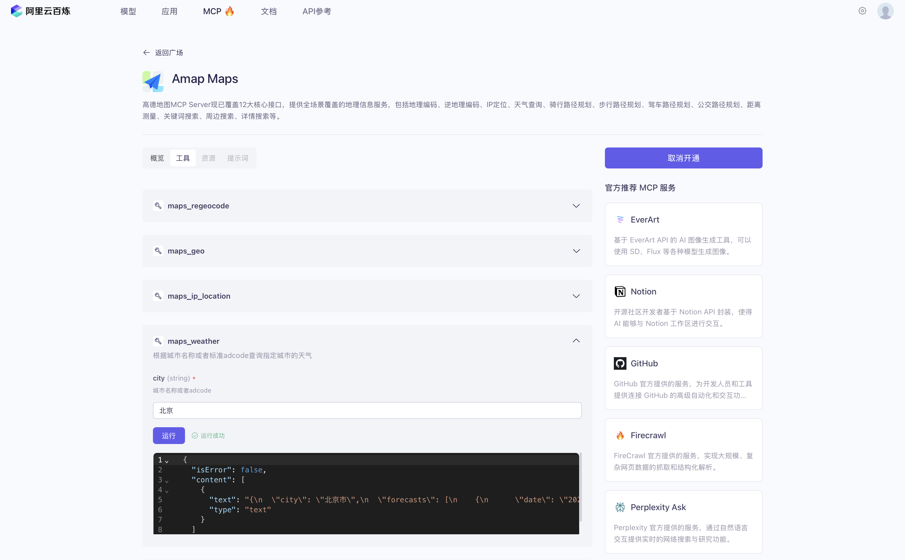

模型上下文协议 MCP#
模型上下文协议 (MCP)[1]是一个开放协议，用于标准化应用程序向大语言模型提供上下文的方式。可以将 MCP 想象成 AI 应用程序的 USB-C 接口。就像 USB-C 为设备连接各种外设和配件提供了标准化方式一样，MCP 为 AI 模型连接不同的数据源和工具提供了标准化方式。
MCP 最先由 Anthropic 提出，是一个开源、标准的协议。MCP 的详细介绍和具体实现，请参考 MCP 官网。
MCP的作用#
在使用LLM构建Agent时，通常需要与各种工具和数据机场，MCP为此提供了很大的便利：
LLM可直接加入MCP服务，可以预见MCP服务会不断增长
避免供应商锁定，可以自由切换LLM
保护的你的数据隐私
高德地图MCP示例#
高德地图MCP Server现已覆盖12大核心接口，提供全场景覆盖的地理信息服务，包括地理编码、逆地理编码、IP定位、天气查询、骑行路径规划、步行路径规划、驾车路径规划、公交路径规划、距离测量、关键词搜索、周边搜索、详情搜索等。
可以在千问、Claude等LLM中使用高德地图提供的数据。下方是查询北京市天气的示例。

MCP 服务器#
核心 MCP 概念#
MCP 服务器可以提供三种主要能力：
资源：类似文件的数据，客户端可以读取（例如 API 响应或文件内容）
工具：可由 LLM 调用的函数（需经用户批准）
提示：预先编写的模板，帮助用户完成特定任务
MCP的核心功能#
Resources 资源
Prompts 提示词
Tools 工具
Sampling 采样
Roots 根目录
Transports 传输层
其中 MCP 的传输层支持了 2 种协议的实现：stdio（标准输入/输出）和 SSE（服务器发送事件）